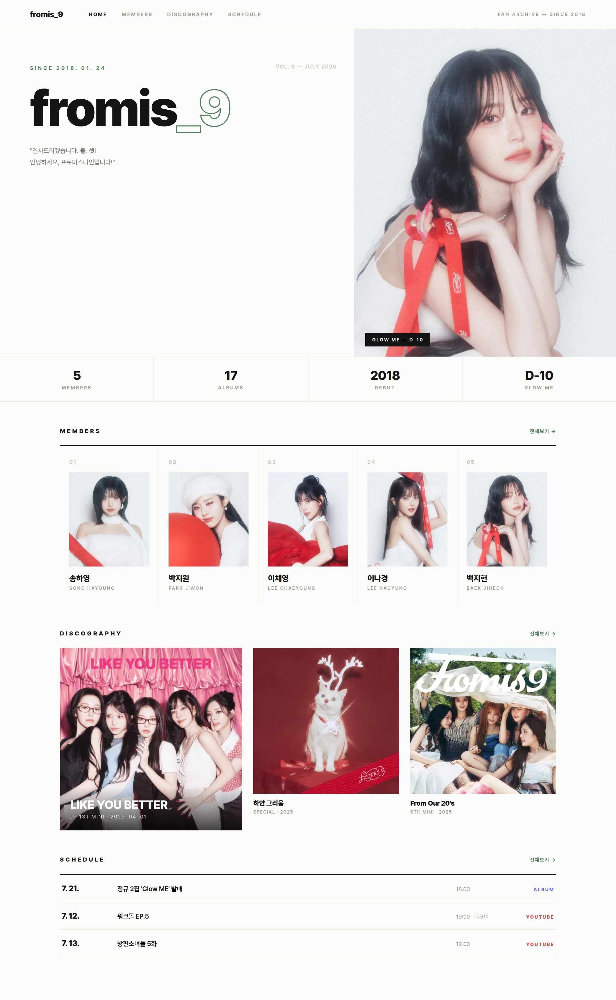
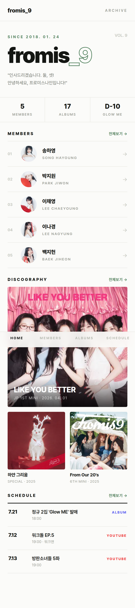

PROJECT BRIEF
fromis_9 UI 리뉴얼 계획서
2026. 07. 11 — 에디토리얼 매거진(C안) 방향 확정
⏸ 보류 중 — 기능 완성 후 진행
01 — 개요
fromis_9 팬사이트(웹 PC/모바일 + Flutter 앱)의 전체 UI를 에디토리얼 매거진 스타일로 리뉴얼한다.
시안 3종(벤토 그리드 / 다크 글로우 / 에디토리얼) 비교 후 C안(에디토리얼)이 PC·모바일 모두에서 채택됐다.
진행 조건 (사용자 결정) — ① 홈 외 나머지 페이지(멤버·앨범·일정·상세)의 시안을 모두 확정하고, ② 현재 개발 중인 기능들이 완성된 후에 일괄 적용한다. 그 전까지는 현행 디자인을 유지한다.
02 — 확정된 디자인 방향
디자인 토큰
배경 #FBFBF9
잉크 #141613
헤어라인 #E8E8E3
그린 #548360 (유지)
보조 텍스트 #9B9E96
- 대형 워드마크
fromis_9 — 이름을 쪼개지 않고 한 줄, _9만 그린 아웃라인
- 키커·라벨은 대문자 + 넓은 레터스페이싱 (
MEMBERS, DISCOGRAPHY…)
- 카드 라운드 최소화(4px), 헤어라인 구분선과 넘버링(01, 02…)으로 구조 표현
- 통계 스트립:
5 MEMBERS | 17 ALBUMS | 2018 DEBUT | D-N
홈 히어로 (확정)
- 키커:
SINCE 2018. 01. 24
- 리드문: 공식 인사 멘트 인용 — "인사드리겠습니다. 둘, 셋! 안녕하세요, 프로미스나인입니다!" (멘트 변경 시 한 줄 수정)
- PC 우측 이미지: 최신 앨범의 세로형 컨셉 포토 중 랜덤 4~5장을 5~6초 간격 크로스페이드. 캡션
{앨범명} — D-N 자동(발매 후엔 발매일 표기).
폴백 체인: 세로형 없음 → 중앙 크롭 1장 → 컨셉 포토 없음 → 앨범 커버 → 멤버 사진
- 모바일 히어로: 사진 없는 타이포 중심 구성
확정 시안

PC — 1440px (잡지 스프레드 히어로 + 통계 스트립 + 컬럼 멤버 그리드)

모바일 — 390px
03 — 적용 계획 (재개 시)
| 단계 | 내용 | 검증 |
|---|
| 1 | 디자인 토큰 정의 — tailwind 설정 확장 (색·타이포 스케일·라운드·레터스페이싱) | 스타일가이드 페이지 렌더 |
| 2 | 웹 모바일 — 홈 → 앨범 목록/상세 → 일정 → 일정 상세 → 검색 (멤버는 미세 조정) | 화면별 스크린샷 + 폰 확인 |
| 3 | 웹 PC — 홈(히어로 슬라이드 포함) → 멤버 → 앨범 → 일정 | 스크린샷 확인 |
| 4 | 앱(Flutter) 정합 — 기존 웹 정합 인프라(SpringFadeIn·format_utils) 재사용 | Otto 발행 후 폰 확인 |
- 화면 단위 확인 + 작은 커밋으로 진행, 화면별 롤백 가능하게
- 진행 중에는 신·구 디자인이 화면별로 섞여 보이는 기간 발생
- 관리자 페이지는 리뉴얼 제외(내부 도구) — 제안 상태
04 — 재개 전 남은 결정
| 항목 | 상태 |
|---|
| 홈 (PC/모바일) | 확정 |
| 멤버 목록/상세 | 시안 필요 현행 에디토리얼 리스트와 톤 통일 예정 |
| 앨범 목록/상세/갤러리/트랙 | 시안 필요 |
| 일정 (달력·검색·상세 7종) | 시안 필요 가장 화면이 많은 영역 |
| 기능 완성 | 대기 생일 상세(웹 미완), 기타 진행 중 기능 |
05 — 참고
- 시안 원본:
/docker/fromis_9/design-drafts/ (git 커밋됨) — C_final_pc.html / C_final_mobile.html
- 탈락 시안: A안 벤토 그리드, B안 다크 글로우 (스크린샷은 대화 기록에)
- 컨셉 포토 세로/가로 판별:
album_photos.width/height 컬럼 활용